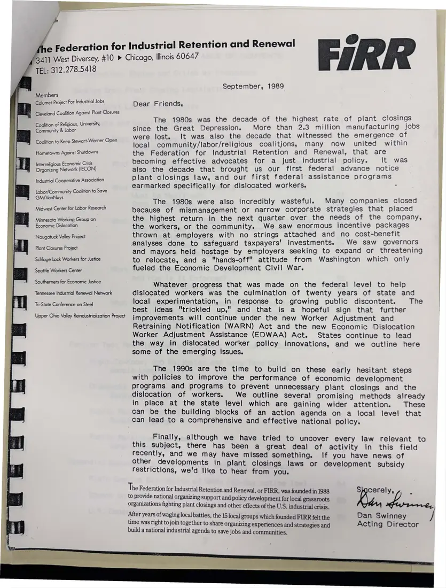

Letter, 1 page
Federation for Industrial Retention and Renewal letter to friends
September 1989
FIRR's acting director Dan Swinney looks back on the 1980s, “the decade of the highest rate of plant closings since the Great Depression,” and describes the federation's work for the 1990s. The letterhead lists its member groups.
Download or cite this itemPages


(open zoom view)Read the page text (machine-read, mostly readable)
This text was generated automatically from the photograph and has not been corrected. The image is the authoritative record.
e Federation for Industrial Retention and Renewal 3411 West Diversey, #10 > Chicago, Illinois 60647 TEL: 312.278.5418 Members Calumet Project For Industrial Jobs Cleveland Coalition Against Plant Closures Coalition of Religious, University, Community & Labor Coalition to Keep Stewart-Warner Open Hometowns Against Shutdowns Interreligious Economic Crisis Organizing Network (IECON) Industrial Cooperative Association Labor/Community Coalition to Save GM/VanNuys Midwest Center for Labor Research Minnesota Working Group on Economic Dislocation Naugatuck Valley Project Plant Closures Project Schlage Lock Workers for Justice Seattle Workers Center _ Southerners for Economic Justice Tennessee Industrial Renewal Network Tri-State Conference on Steel Upper Ohio Valley Reindustrialization Project FiRR The 1980s was the decade of the highest rate of plant closings since the Great Depression. More than 2.3 million manufacturing jobs % were lost. It was also the decade that witnessed the emergence of community/labor/religious coalitions, many now united within September, 1989 Dear Friends, local the Federation for Industrial Retention and Renewal, that are becoming effective advocates for a just industrial policy. It was also the decade that brought us our first federal advance notice plant closings law, and our first federal assistance programs earmarked specifically for dislocated workers. bh elles x: © Le ee ey Fu The 1980s were also incredibly wasteful. Many companies closed because of mismanagement or narrow corporate strategies that placed the highest return in the next quarter over the needs of the company, the workers, or the community. We saw enormous incentive packages thrown at employers with no strings attached and no cost-benefit analyses done to safeguard taxpayers’ investments. We saw governors and mayors held hostage by employers seeking to expand or threatening to relocate, and a "hands-off" attitude from Washington which only fueled the Economic Development Civil War. Whatever progress that was made on the federal level to help dislocated workers was the culmination of twenty years of state and local experimentation, in response to growing public discontent. The best ideas "trickled up," and that is a hopeful sign that further improvements will continue under the new Worker Adjustment and Retraining Notification (WARN) Act and the new Economic Dislocation Worker Adjustment Assistance (EDWAA) Act. States continue to lead the way in dislocated worker policy innovations, and we outline here some of the emerging issues. The 1990s are the time to build on these early hesitant steps with policies to improve the performance of economic development programs and programs to prevent unnecessary plant closings and the dislocation of workers. We outline several promising methods already in place at the state level which are gaining wider attention. These can be the building blocks of an action agenda on a local level that can lead to a comprehensive and effective national policy. . Finally, although we have tried to uncover every law relevant to this subject, there has been a great deal of activity in this field recently, and we may have missed something. If you have news of other developments in plant Closings laws or development subsidy restrictions, we'd like to hear from you. Be. cL - Dan Swinney Acting Director The F ederation for Industrial Retention and Renewal, or FIRR, was founded in 1988 to provide national organizing Support and policy development for local grassroots organizations fighting plant closings and other effects of the U.S. industrial crisis. After years of waging local battles, the 15 local groups which founded FIRR felt the time was right to join together to share organizing experiences and strategies and build a national industrial agenda to save jobs and communities.
See something wrong, or recognize a person or event? Send a correction. If you hold rights in this item or think it should not be public, write to the same address.